Registered voters
18.90M
18,903,689 registered voters across all 165 House of Representatives constituencies.
This page brings together official constituency results, proportional vote totals, and a 275-seat parliament outlook to explain what happened in Nepal’s federal contest and how votes translated into seats.
A compressed political timeline of the September 2025 upheaval: platform bans, mass protests, resignation, emergency measures, interim leadership, dissolution of parliament, and the election that followed.
Authorities impose a sweeping digital restriction, shutting down 26 social platforms and triggering immediate public backlash.
Demonstrations spread across the country, led largely by younger protesters demanding reversal of the ban and political accountability.
The protest wave reaches its high point, and Prime Minister K.P. Sharma Oli steps down under mounting political pressure.
The state responds to the escalation with curfews and military deployment, marking the most coercive phase of the crisis.
An interim administration is formed around Sushila Karki as the political system attempts to stabilize after the resignation.
On the same day, parliament is dissolved and a new general election is called, shifting the crisis into an electoral reset.
Demonstrations begin to taper off as the interim arrangement and election announcement ease immediate pressure on the streets.
Nepal returns to the ballot box after six months of political rupture, making the election the formal endpoint of the crisis timeline.
The seat figures below preserve the distinction that matters most: 165 seats are direct constituency wins, while the remaining 110 seats are a modeled PR allocation. The combined totals are therefore a parliament outlook rather than a separate official seat file.
A majority in the 275-seat chamber starts at 138 seats. The modeled outlook puts RSP at 182 seats, which is 44 seats above that line.
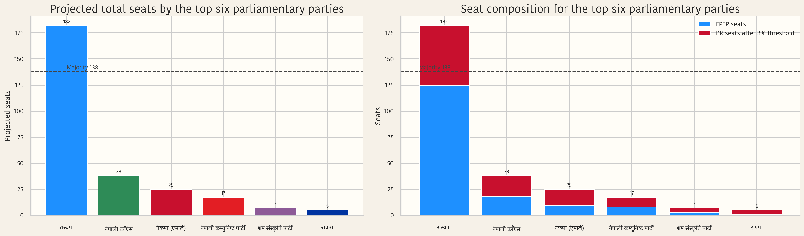
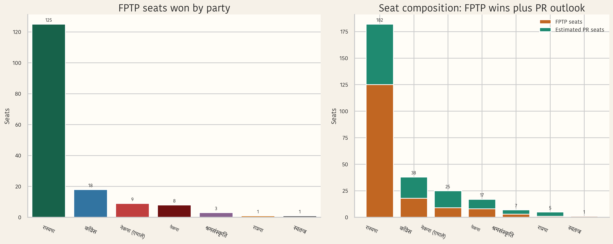
The key shift here is between Nepal’s two ballot types: who performs better in constituency aggregation, who performs better on the PR ballot, and how those differences become representation gaps in the seat outlook.
RSP’s seat share in the blended 275-seat outlook sits about twenty percentage points above its combined vote share. That is the clearest representation gap in the seat outlook.
CPN-UML holds 14.42% of combined votes but only 9.09% of projected seats, the deepest negative gap among seat-winning parties.
RSP needs the fewest combined votes per projected seat in the model. Lower values here mean support turns into seats more efficiently.
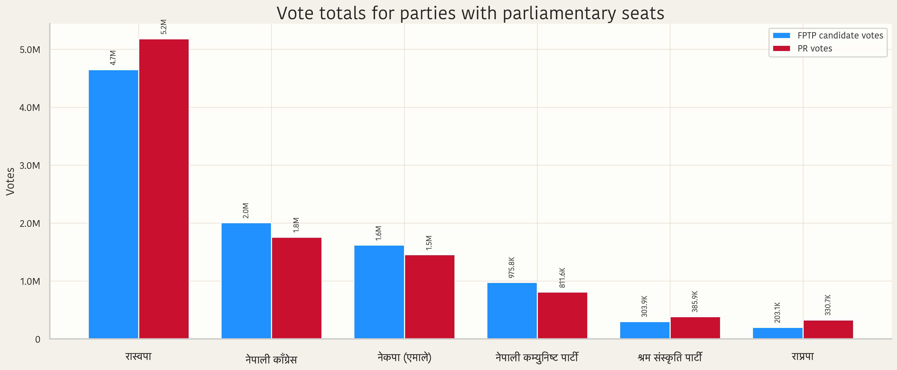
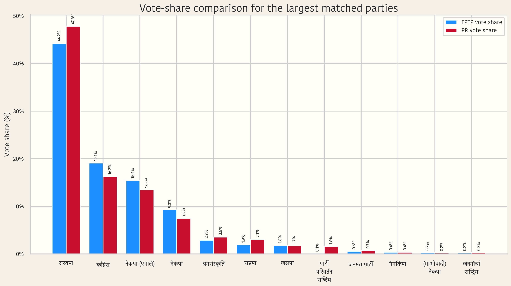
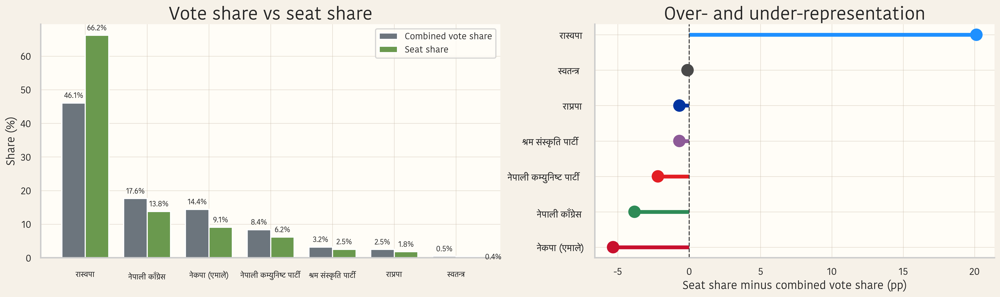
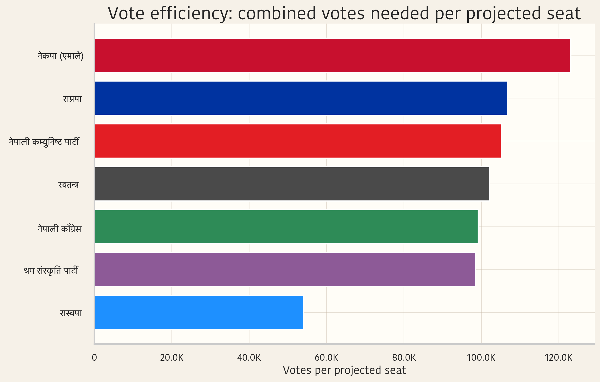
These are the moments that stand out most clearly in the election data: closest race, biggest landslide, strongest vote totals, and the clearest seat-conversion patterns.
Bishwa Raj Pokharel defeated Kumar Luitel by just 5 votes, the narrowest margin among all 165 constituencies.
Dr. Lekhjung Thapa recorded the biggest victory margin in the election, defeating Sushil Gurung by 50,379 votes.
Jhapa Area 5 produced the highest winning vote total, along with one of the most visible landslide outcomes.
No party comes close to RSP on the proportional ballot. The next-largest PR total, Nepali Congress, is far behind at 1,759,172 votes.
The 110 proportional seats are distributed only among the six parties that cross the 3% threshold, which sharply narrows the PR field.
In the blended seat model, RSP converts support into seats more efficiently than any other party with parliamentary representation.
These cards stay close to what the election data supports directly: vote totals, constituency context, and why each result matters in the broader picture.
Shah wins with 68,348 votes and a 49,614-vote margin. That is both the largest single winner vote total and one of the election’s signature landslide outcomes.
Thapa posts the widest margin in the election, defeating the runner-up by 50,379 votes. This seat sits at the extreme end of the margin distribution.
Rana Magar secures 60,110 votes and a 48,742-vote margin, placing her seat among the strongest large-margin victories in the country.
Lamichhane wins with 54,402 votes and a 39,838-vote margin, reinforcing how strongly the top party performs not only in votes but also in seat conversion.
Dhakal’s 58,208 votes and 45,175-vote margin place Chitwan Area 1 firmly in the landslide group highlighted by the victory-margin charts.
Pokharel becomes the face of competitiveness in this election: a 13,953 to 13,948 result, decided by only 5 votes.
This section turns the existing charts into a readable sequence so the website covers more than just the headline numbers.
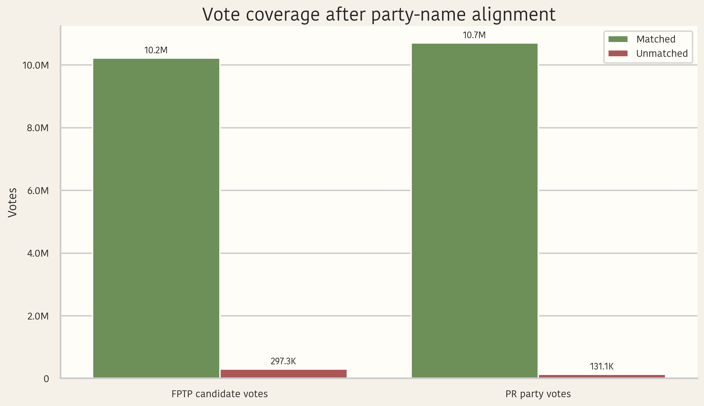
The alignment layer preserves nearly the whole vote pool, which matters because every comparison after this depends on matched party labels being broad rather than selective.
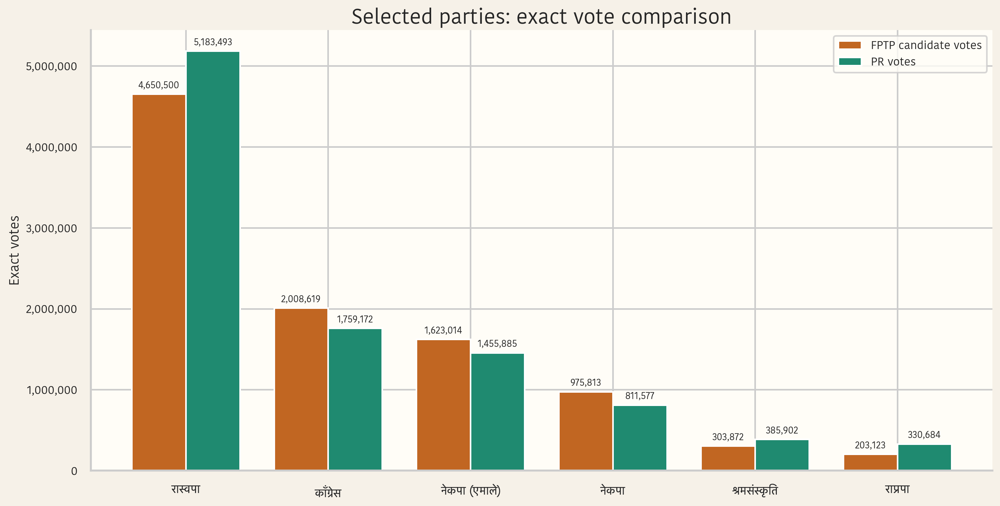
This zoomed view replaces impression with precision, showing exact FPTP and PR vote totals for the six parties that matter most in the chamber outlook.
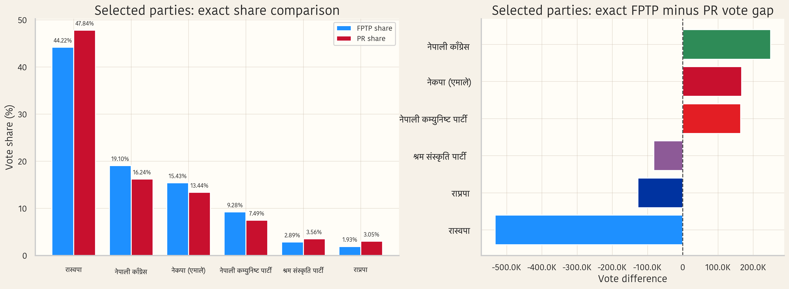
These panels separate two questions: who is big in raw scale, and who is structurally stronger in one ballot type than the other.
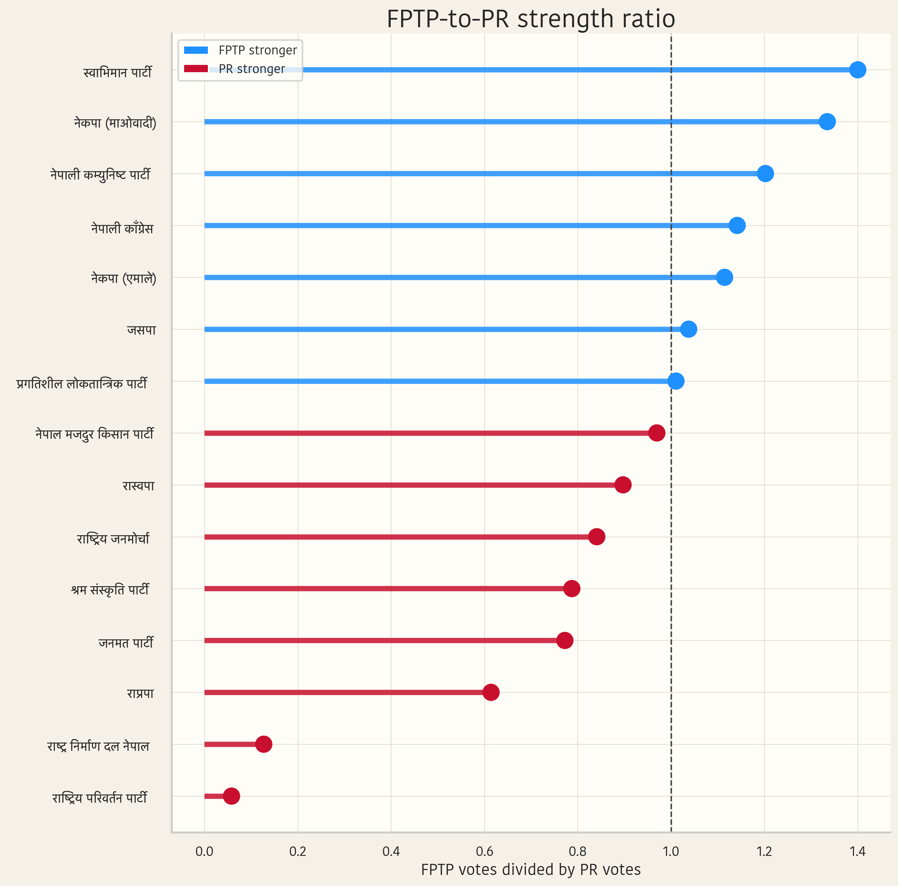
Ratios above one indicate constituency-heavy performance; ratios below one indicate relatively stronger PR support. This is where the party system starts to look less uniform.
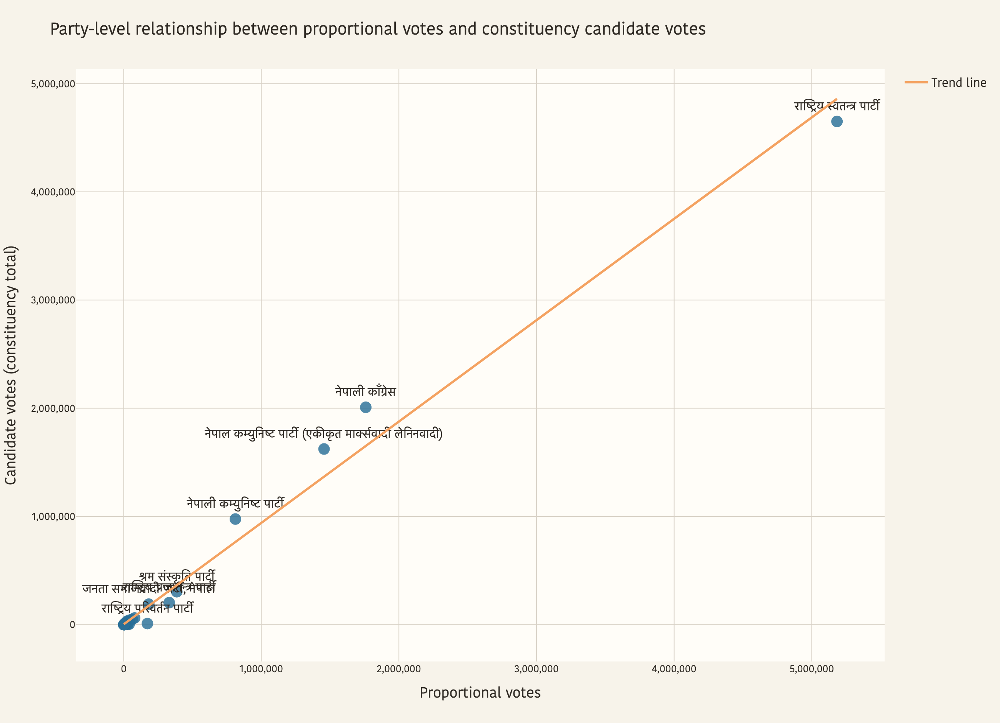
The broad correlation is clear, but the distance from the trendline shows that parties of similar PR size can still perform very differently in constituency aggregation.
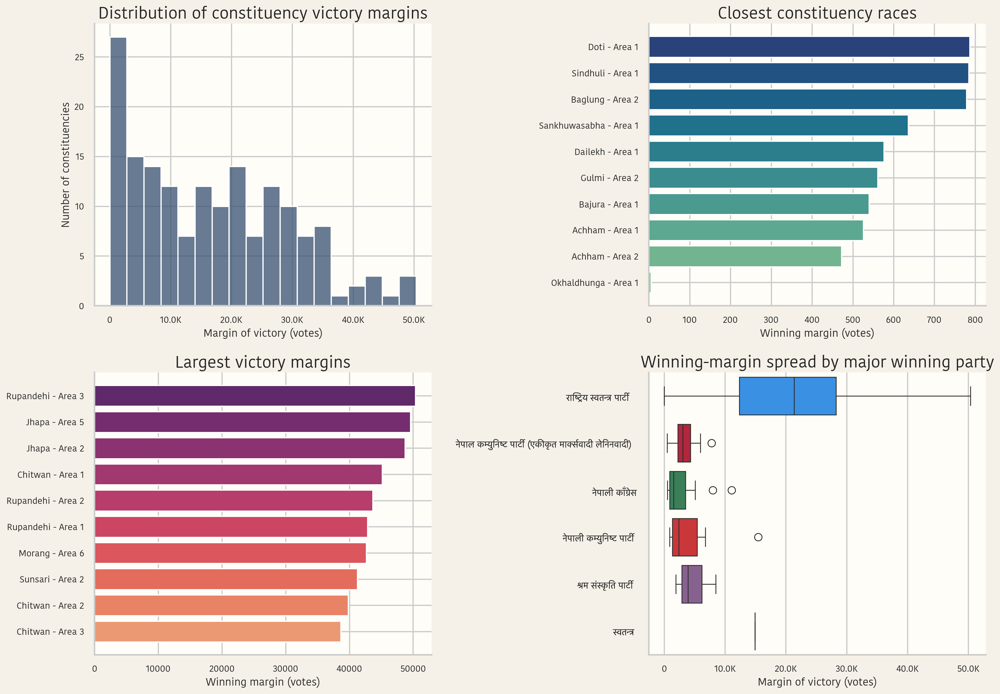
The histogram, closest races, and landslide cases all show up together here, making the election look competitive in some places and highly concentrated in others.
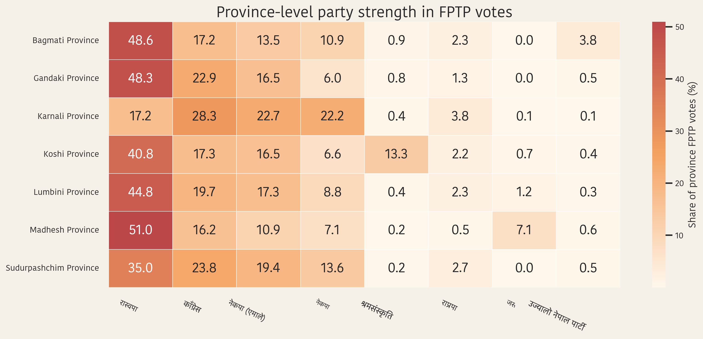
This is not a raw-vote map. It is a share-based heatmap that makes regional strongholds visible without letting large provinces dominate the picture.
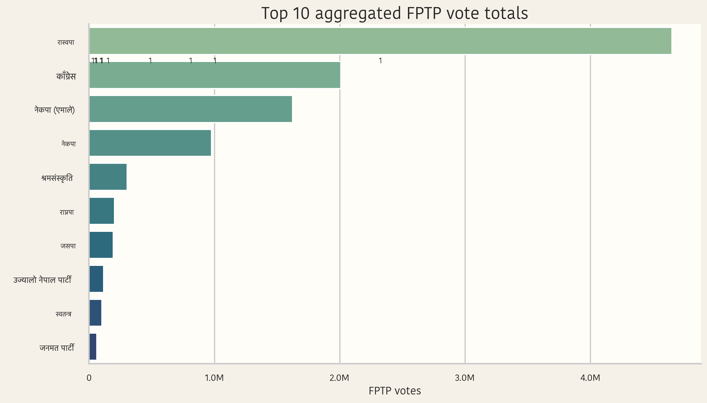
A compact ranking of the biggest constituency winner totals in the country, led by Balendra Shah and followed by several other large-margin RSP wins.
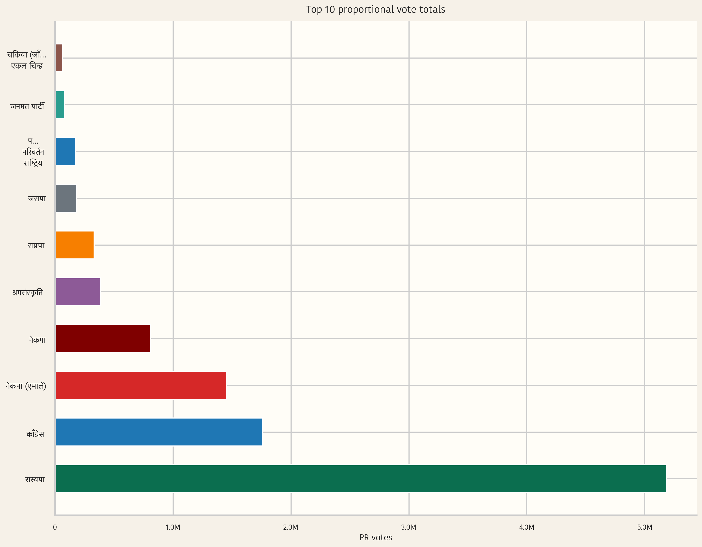
The PR chart shows how steep the drop is after the leading party and why only six parties clear the model’s 3% eligibility threshold.
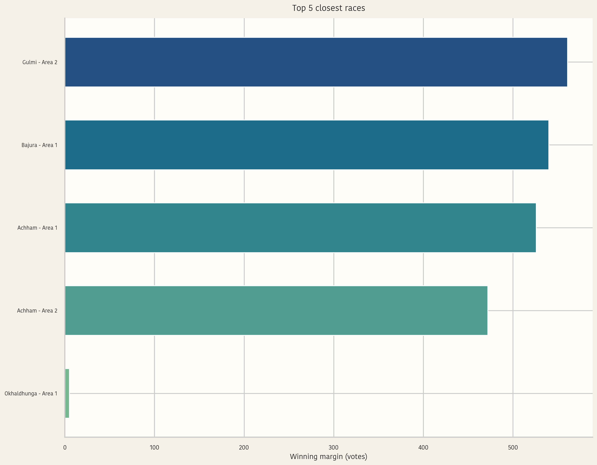
At the tight end of the spectrum, a few constituencies were decided by margins small enough to completely change the narrative of local competitiveness.
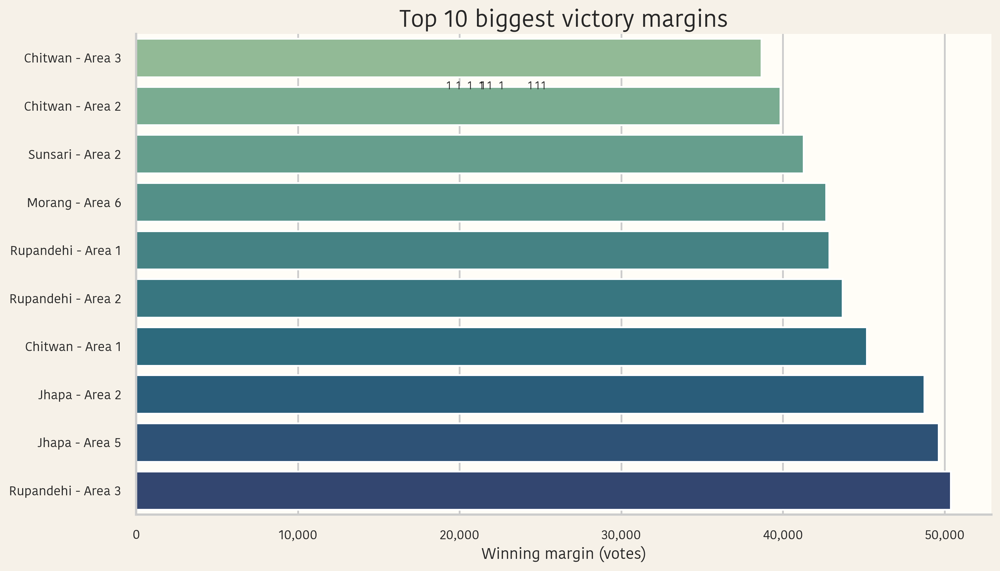
The largest-margin seats underline how concentrated the top party’s best constituencies are and why the seat map ends up so asymmetrical.
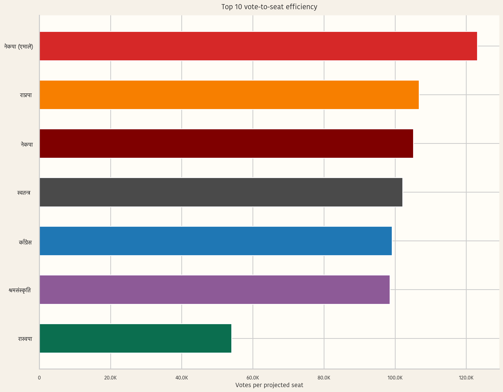
This ranking compresses a complicated representation problem into a single indicator: how many combined votes each projected seat effectively costs.
The closing section focuses on what the numbers support most clearly: vote concentration, representation drift, and electoral competitiveness.
RSP is not only the top FPTP seat winner. It also leads the PR ballot by a large margin. That makes the overall dominance in the 275-seat outlook structurally consistent, not a one-system fluke.
The 110-seat PR layer softens FPTP concentration by bringing more parties into the projected chamber, yet the FPTP lead remains large enough to preserve a clear majority.
A five-vote thriller and multiple 40,000-plus landslides live in the same election. No single label like “competitive” or “non-competitive” captures the whole map without qualification.